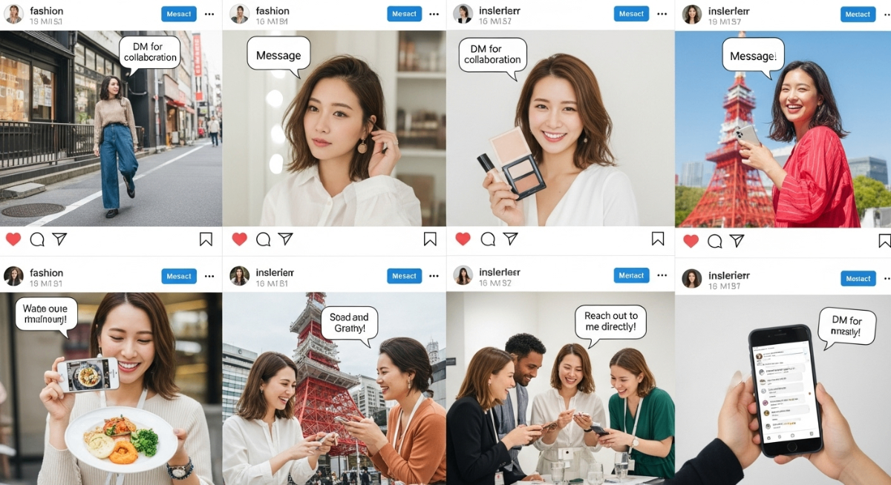
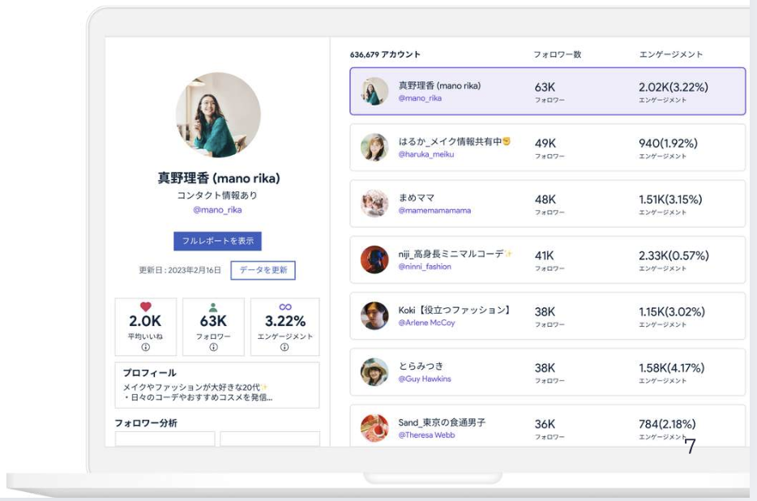
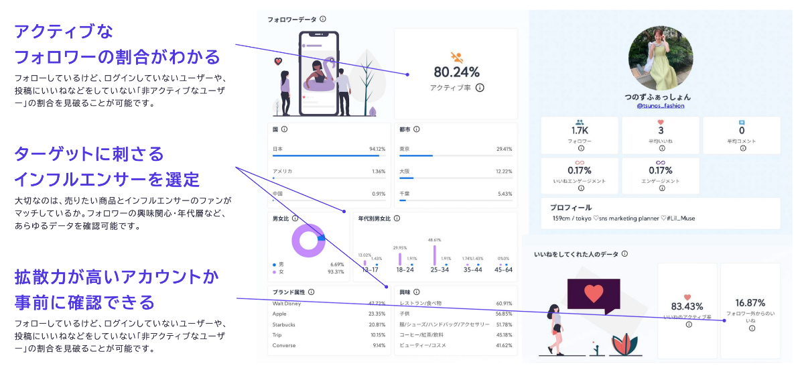
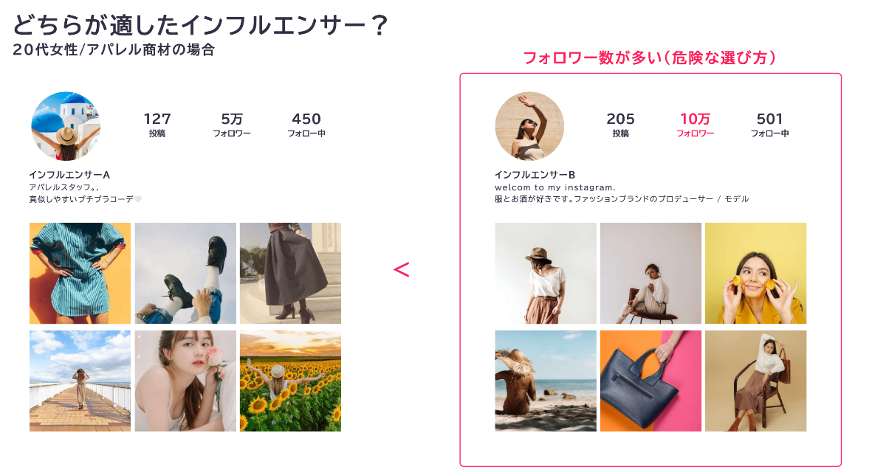
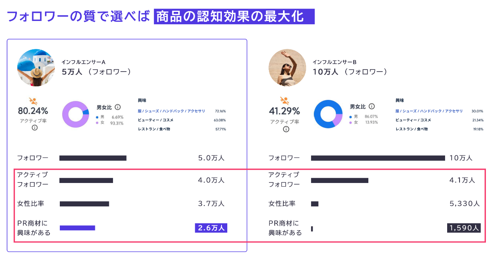
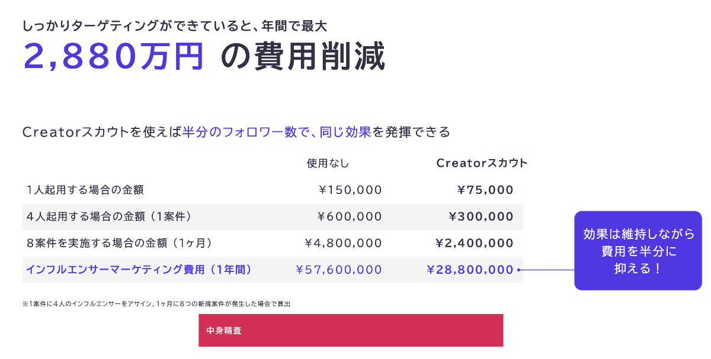
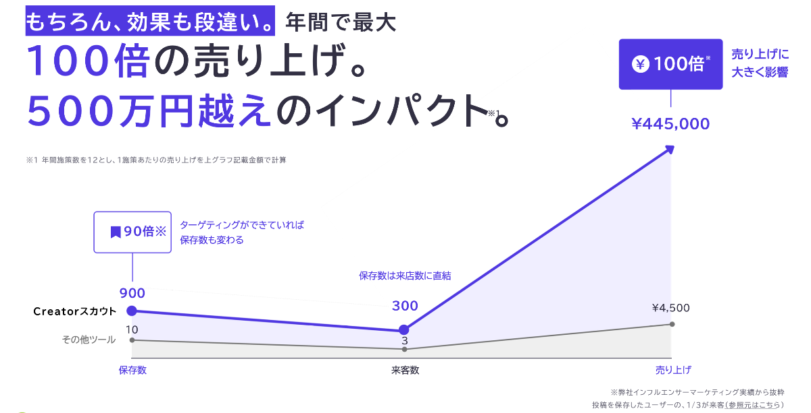

#インフルエンサーマーケティング #AI分析 #業務代行
AI分析が無数の才能の中からあなたのブランドの「運命の人」を見つけ出します！
Creatorスカウトに全てお任せ下さい
多くの企業が抱える共通の悩みを解決します
42%の企業が最適なインフルエンサーの選び方がわからないと回答
効果が分かりづらい（38%）、効果測定ができない（23%）
明確な成果指標が設定できずに困っている企業
革新的な技術で、これらの課題を根本から解決
通常は見ることのできない50以上の独自の裏側データをAIが分析。フォロワーの質を可視化し、真の価値を見極めます。
30を超えるフィルターで、200万以上の膨大なアカウントから質の高いインフルエンサーを効率的に抽出できます。
日本で活動するインフルエンサーの対応アカウント数はNo.1。幅広い選択肢から最適なパートナーを見つけられます。

フォロワー数や見た目だけでは分からない真の価値を数値化


フォロワー数だけで選ぶとミスマッチの危険あり

フォロワーの質を分析して最適な人選を実現
インフルエンサーが勢いのある状態か、下降気味なのかを時系列で正確に判断できます。
成長トレンドを可視化し、投資タイミングを最適化
エンゲージメントの高いハッシュタグを抽出し、PR商品との相性を確認できます。
いいねをしたユーザーのアクティブ率や、フォロワー外からのいいねの割合も詳細分析。
真の影響力を数値化し、ROIを予測
データドリブンなアプローチで、マーケティング効果を最大化
ターゲット
リーチ数向上
コスト
削減率
売上
最大成長率
年間最大
コスト削減


5万フォロワー
10万フォロワー
フォロワー数が半分でも、質の高いフォロワーを持つインフルエンサーAが
約1.6倍のターゲットリーチを実現
潜在層への効率的なリーチを実現する独自のターゲティング手法
ターゲットとなる一般ユーザーが共通してフォローしているインフルエンサーを発掘する独自の手法。 これにより、潜在層へのリーチとファン化を強力に促進します。
理想的な顧客のSNS行動を詳細分析
ターゲットが共通してフォローするアカウントを特定
発見したキーアカウントとの連携で効果を最大化
リーチ数向上
いいね数増加
保存数向上
従来手法と比較して圧倒的な成果を実現
インフルエンサーマーケティングの全工程を完全代行。
お客様は結果だけを確認いただけます。
AIによる最適な候補者の抽出
パーソナライズされた提案書の送付
価格や投稿内容の詳細交渉
法的に安全な契約書の準備
投稿内容の企画・監修
投稿タイミングの最適化
詳細な成果レポートの作成
次回キャンペーンへの最適化案
担当者の工数を90%削減。本業に集中していただけます。月100時間以上の業務負担を軽減します。
炎上リスクの事前回避、法的コンプライアンスの確保、契約トラブルの防止まで専門チームが対応します。
経験豊富な専門チームによる戦略的アプローチで、自社で行うよりも高い成果を実現します。
工数削減
月間短縮
従来手法と比較して圧倒的な成果を実現